前情提要：榨干DeepSeek！
用 Reasonix 工作了一整天，大概处理了 4.35 亿个输入 token，缓存命中率 99.82%，实际账单 $12。
同样的工作量，如果用一个不做缓存优化的 agent 跑 DeepSeek V4-Flash，账单可能会是 $61。
差了整整 5 倍！
在这4.35 亿 token里面，大约 4.34 亿 token 走了缓存价，只有 78 万 token 按全价计。
Reasonix将Deepseek的缓存发挥到了极致！
不得不承认，Deepseek让所有的国产Coding Plan失去了意义。
上次我们主要讲了CLI，这回重点介绍Reasonix的桌面端，怎么安装、界面怎么用、几个核心功能的设计逻辑，最后单独讲缓存，因为缓存是 Reasonix最大的亮点。
安装
桌面端基于 Tauri 2 构建，各平台的安装包在 GitHub Releases 页面下载。
如果访问不了可以这里直接下载 ：
https://link.bytenote.net/note
macOS：下载 .dmg，拖入到指定的目录 Applications下。
第一次打开会被 Gatekeeper 拦截，因为目前安装包还没有代码签名，一行命令解决：
xattr -dr com.apple.quarantine /Applications/Reasonix.appWindows：NSIS 安装器，安装界面支持中文。SmartScreen 会弹警告，点更多信」->仍然运行。
Linux：.deb 或 AppImage，后者直接双击运行，不需要安装。
桌面端 macOS 版本自带 Node runtime，不需要你本机装 Node。Windows 和 Linux 目前还依赖系统 Node，需要 >= 22。
安装完打开，第一次会走一个设置向导，填 DeepSeek API Key，选默认模型，推荐 deepseek-v4-flash，原因后面讲。
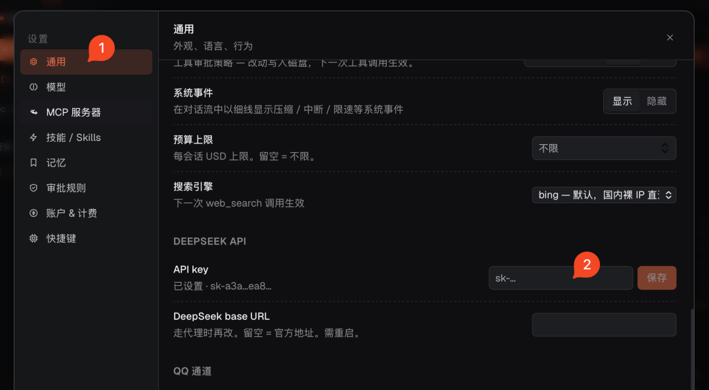
填入的Key 会被持久化在 ~/.reasonix/config.json，后续不用再填。
认识一下桌面端
打开之后，界面分四个区域。从左到右：
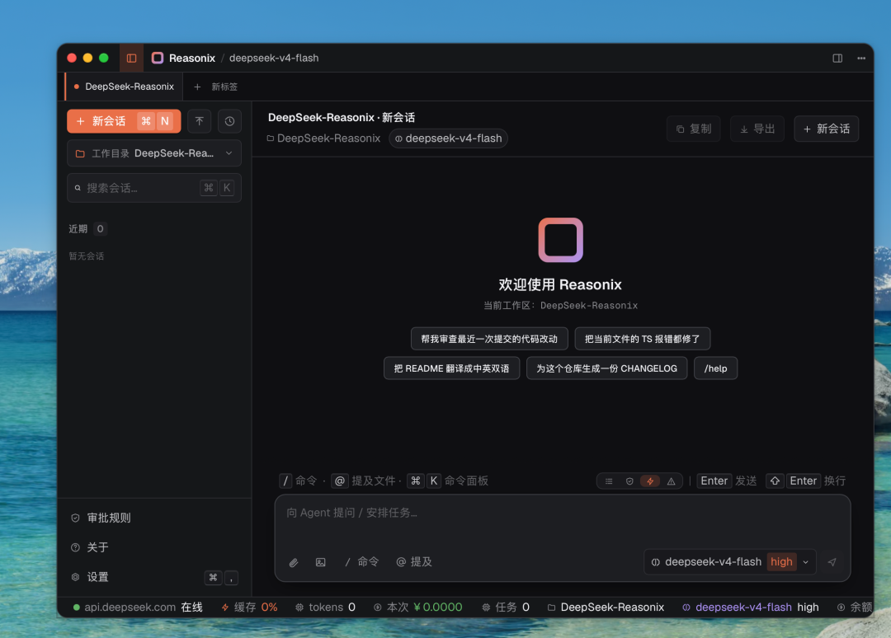
左侧边栏 — 会话管理。
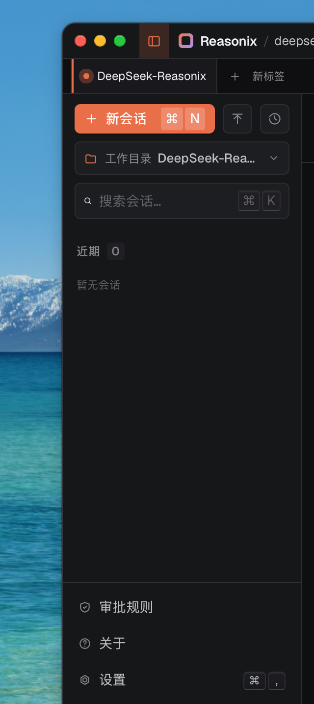
这里是所有历史对话的列表，按时间倒序排，自动生成会话标题。
顶部有新建会话按钮，底部是工作目录切换、设置、命令面板的入口。
会话支持重命名、删除、搜索过滤。
中间主区域 — 对话主体。
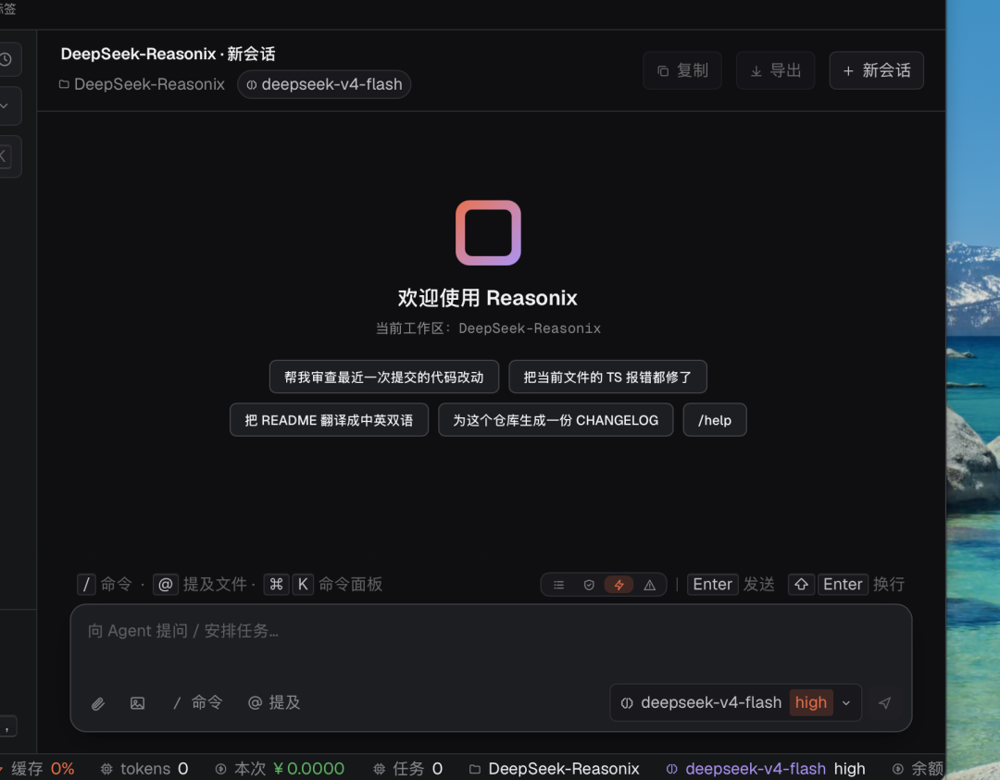
上半部分是消息线程，下半部分是输入区，这里是你大部分时间的焦点，后面详细说。
右侧上下文面板 — 当前会话状态。
四个标签页：
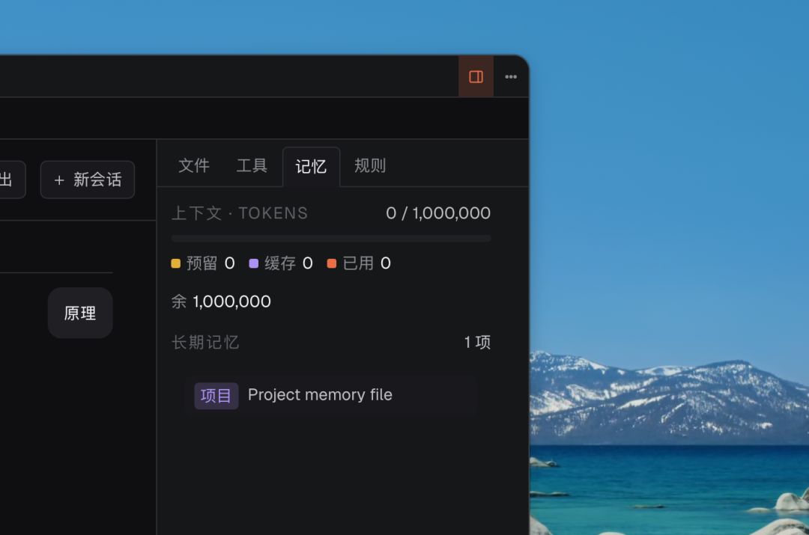
文件（当前会话引用的文件）、工具（已注册的 MCP 工具）、记忆（项目和用户记忆）、规则（当前生效的权限配置）。
面板顶部有一个三色进度条，显示当前 context 的 token 分布，这是它的重点特色，对于缓存的数据，效果一览无余。
浮动 JumpBar — 长对话导航。
当对话超过 2 轮，右边会出现一个迷你导航条，每一格对应一条用户消息。鼠标悬停预览内容，点击直接跳转。长会话翻历史不用一直滚轮了。
消息线程里有什么
AI 的每一次回复不只是纯文本，而是由多种卡片组合而成：
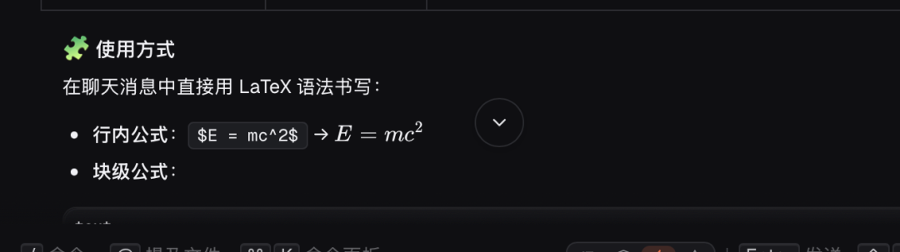
文本卡片：Markdown 渲染，支持代码高亮、表格、KaTeX 数学公式。代码块右上角有一键复制按钮。
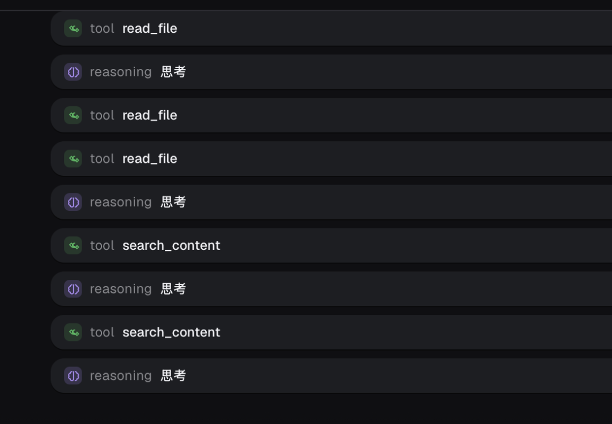
工具调用卡片：显示这次调用了什么工具、传了什么参数、执行了多久、返回了什么。默认折叠，点开可以看完整内容。
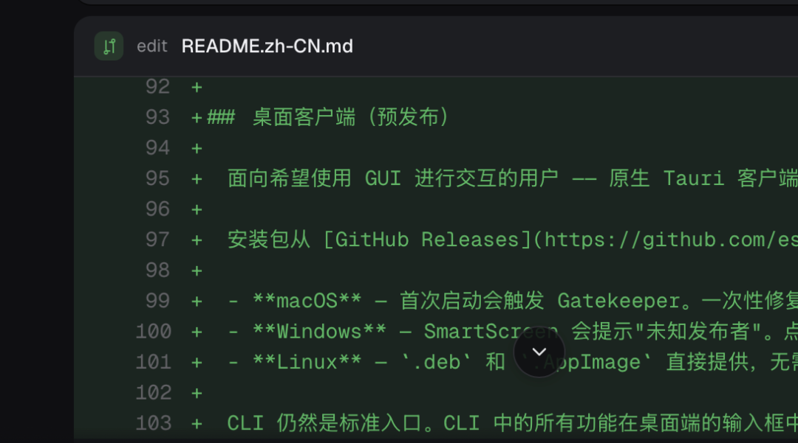
差异对比卡片：AI 编辑文件后，会展示文件修改前后的 diff，增加的行绿色，删除的行红色。
计划卡片：Plan 模式下，AI 不会直接动文件，而是先提交一份多步骤计划，每步标注风险等级。你看完审批，AI 再开始执行。
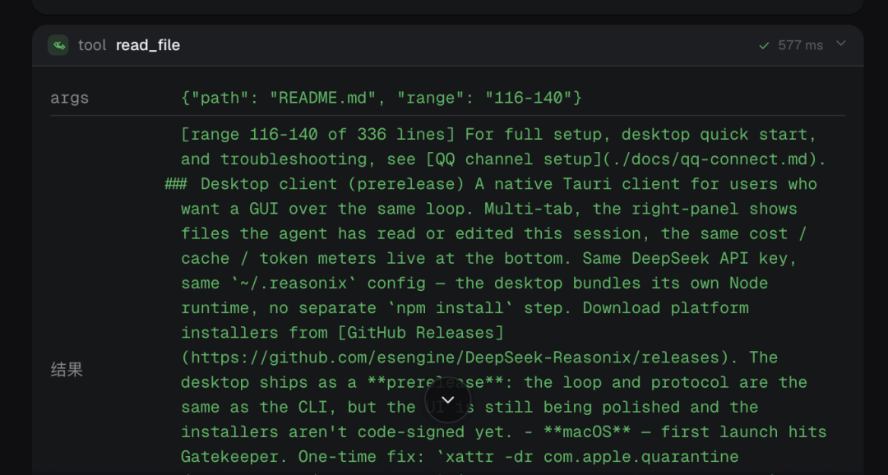
推理过程卡片：DeepSeek 的 thinking 过程会单独显示在一个可折叠的卡片里，不占主要阅读空间，想看时展开，这比CLI更加的方便。
四种编辑模式
输入框左侧有四个模式按钮，这是整个桌面端里我觉得设计得最好的一个功能。
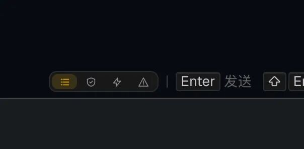
分别是
- 1. Plan：AI 只能读，不能写，必须先提交计划等你批
- 2. Review：AI 的写操作进入审核队列，每次都要你确认
- 3. Auto：文件读写自动执行，Shell 命令仍需确认
- 4. YOLO：全程跳过确认，AI 自己跑
默认是 Review 模式。
你完全了解的代码的情况下，可以开 Auto 甚至 YOLO，让 AI 跑得快一点。换到陌生的遗留代码库，回 Review，每次改动都自己过一遍。
任务执行到一半发现 AI 方向偏了，当场换模式，不用退出重来。
在 Review 模式下，每个文件改动都会展示前面说的差异对比卡片，并附上两个按钮让用户进行选择。
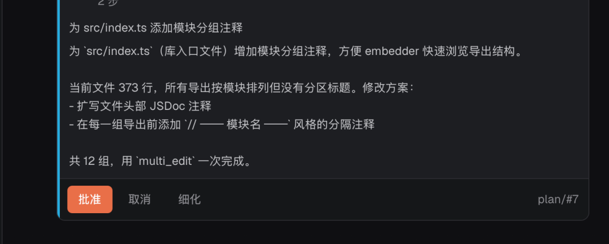
可以逐条审批，不满意直接拒绝单条。
输入区的几个细节
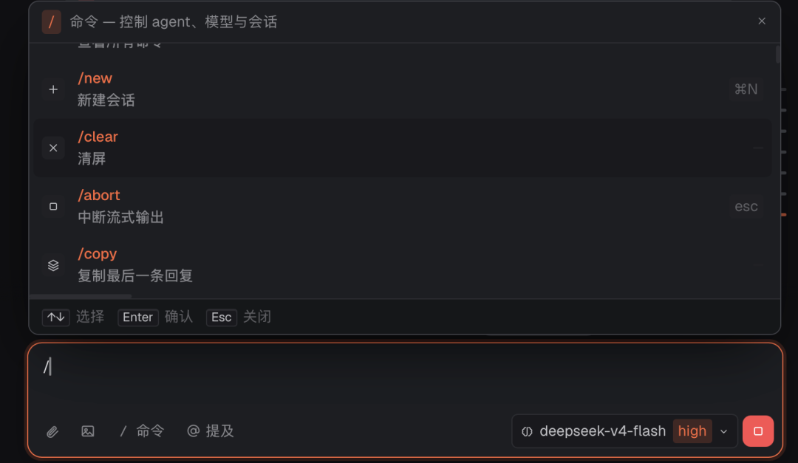
斜杠命令：输入 / 弹出命令补全菜单，30 多个命令。
几个常用的：
/effort high # 提升推理强度，用在复杂任务上
/compact # 手动压缩 context（缓存安全方式，不破坏前缀）
/plan # 切到 Plan 模式并触发计划生成
/budget 5 # 设置本次会话的软性预算上限，单位 USD
/retry # 重新生成上一条回复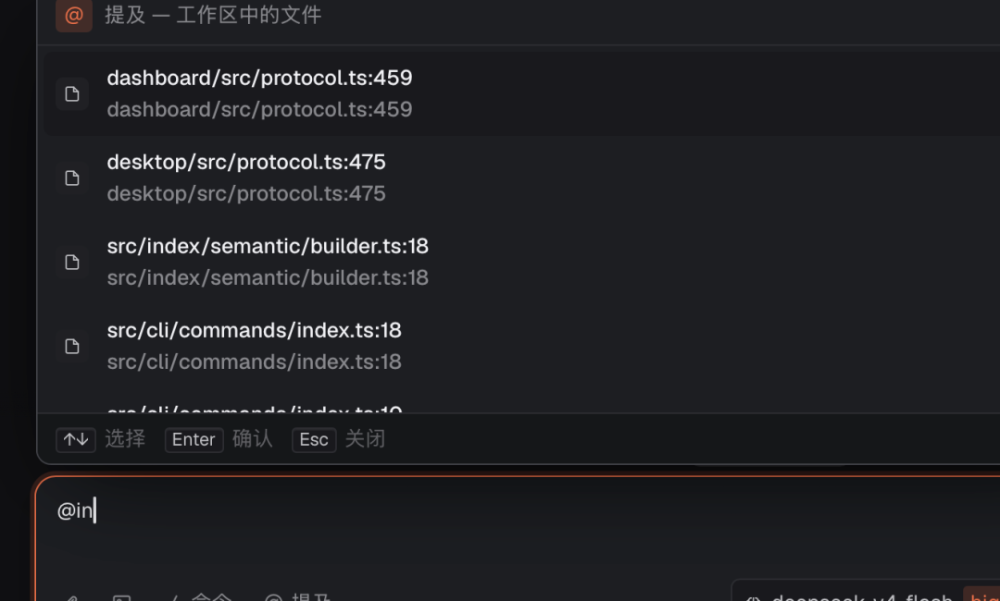
@ 引用：输入 @ 可以引用项目文件、URL 或剪贴板内容。引用文件时会触发文件搜索弹窗，支持模糊匹配文件名。
粘贴图片：截图后直接在输入框粘贴，自动识别为图片附件。适合粘 UI 截图让 AI 分析样式问题。
快捷键：Cmd/Ctrl + K 打开命令面板，Cmd/Ctrl + Enter 发送，Esc 中断生成。
多标签页，多项目并行
桌面端支持多标签页，每个标签页绑定独立的工作目录和对话上下文。
一个标签处理前端项目的 bug，另一个标签在写后端 API 文档，各自的 context 完全隔离，切换标签不会把两个项目的对话历史混在一起。
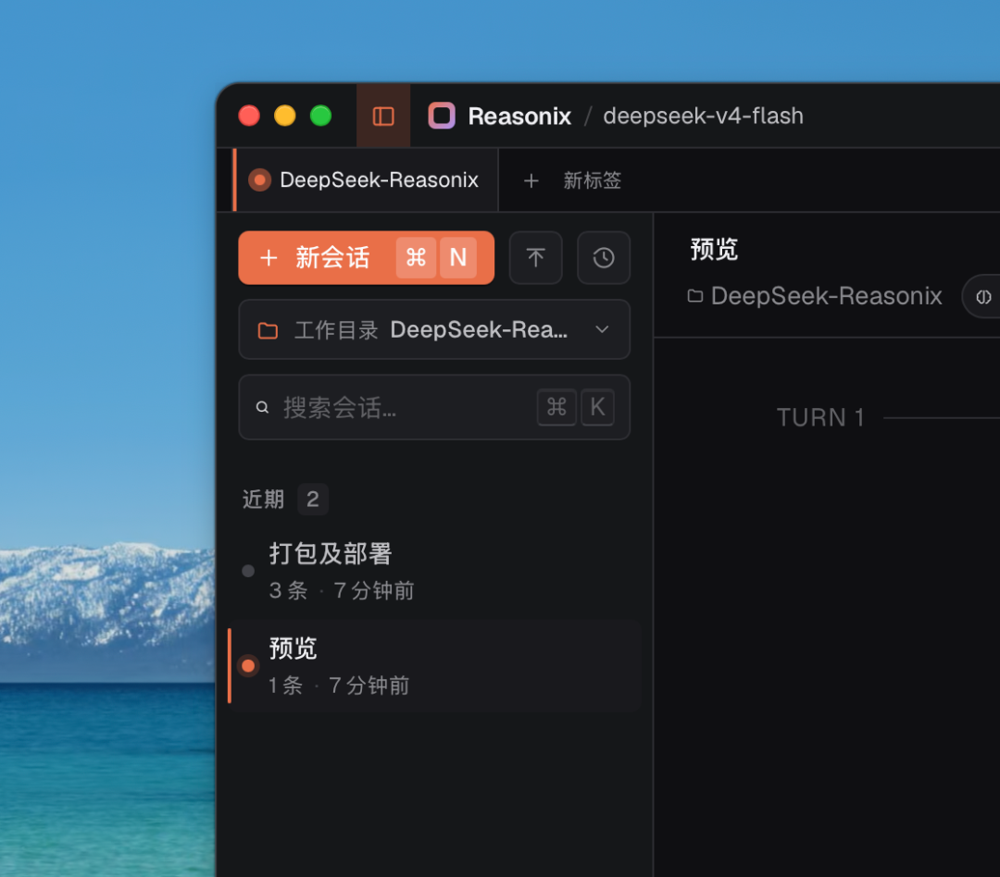
切换工作目录时，AI 会自动读取新项目的 REASONIX.md（类似 Claude Code 的 CLAUDE.md）、.gitignore 以及 .reasonix/ 目录下的项目级配置。
每个项目有自己的规则、记忆和权限设置，不需要手动切换。如果在终端里做，要么开多个 terminal window，要么手动 cd 来回跳。
桌面端把它变成了标签页，真的是方便太多了！
记忆系统
Reasonix 有一套自己的跨会话的记忆机制，分四个层级：
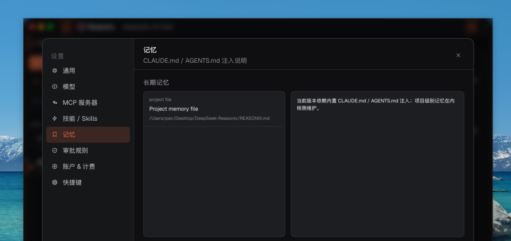
项目记忆：保存在项目目录的 REASONIX.md 里。每次启动该项目的会话，AI 会自动读取。适合放「这个项目的技术栈」「代码风格规范」「不要碰某些文件」这类信息。
用户记忆：保存在 ~/.reasonix/memories/ 里，跨所有项目生效。适合放「我习惯用 camelCase」「回复尽量简洁」这类个人偏好。
会话记忆：当前会话内的临时上下文，关闭会话后不保留。
全局记忆：跨项目生效的规则，比「用户记忆」层级更高。
在设置 -> 记忆页面可以查看和编辑所有已保存的条目。
成本控制面板
这部分是桌面端相比 CLI 最直观的提升之一。
设置 -> 账单页面。
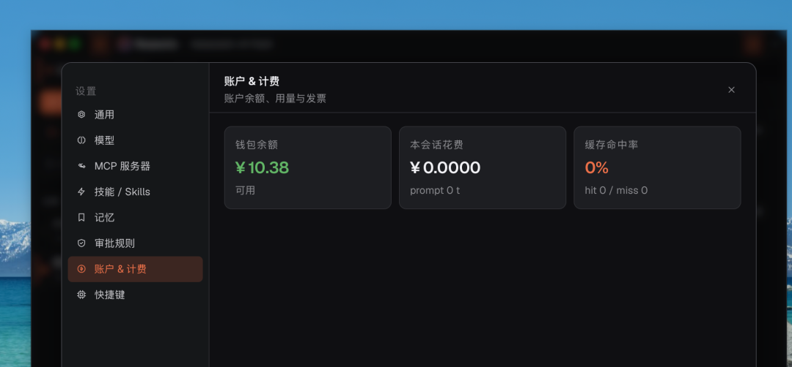
可以看所有历史会话的累计 token 用量和预估费用。
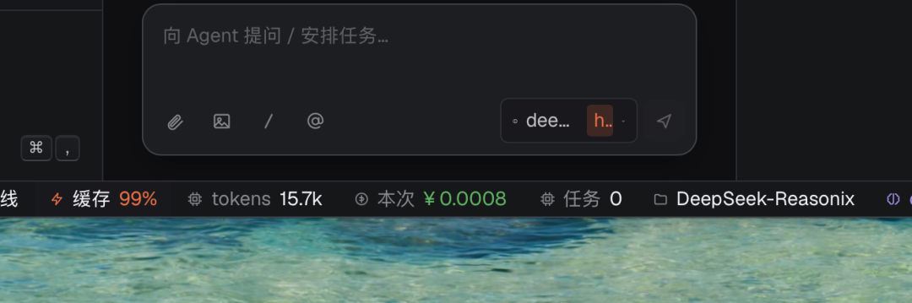
缓存是怎么做到 99.82% 的？
Reasonix 的核心，它为什么比其他 Agent 便宜那么多？为什么你可以不用去买Coding Plan了？
DeepSeek 的 context caching 全自动，不需要你在请求参数里加任何东西。它的逻辑是：
每次请求发出后，系统把你的 prompt 前缀存到硬盘。
注意是硬盘，不是内存，所以跨会话也能复用。
下次发请求，如果新请求的前缀从第 0 个 token 开始完全一致，就算命中，命中部分按缓存价计费。
缓存价 vs 全价的差距：0.28/M token，差 10 倍。
API 响应里会告诉你这次命中了多少：
{
"usage": {
"prompt_tokens": 50000,
"prompt_cache_hit_tokens": 49500,
"prompt_cache_miss_tokens": 500
}
}这就是桌面端右侧那个三色进度条数据的来源。
缓存全自动，但稳定性不行！
缓存是全自动的，什么都不用做就能享受缓存。
但稳定性不行。缓存能不能命中，取决于你每次发给 API 的 prompt 前缀是否完全一致。Agent 在多轮对话里每次都要把完整对话历史发给 API，只要结构稍有变化，前缀就断了，缓存就废了。
常见的破坏场景：
系统提示里混了时间戳、工具定义列表顺序不固定、DeepSeek 的 reasoning_content 处理方式不对、截断历史时从中间删消息而不是从尾部删。
每一条单独看都不起眼，组合起来就可能让命中率从 99% 掉到 20%。
大多数 agent 框架对这件事不在意，因为它们要支持多个模型，没法为某一家的缓存机制做深度优化。
Reasonix 的解法，把缓存稳定性做成不变量
Reasonix 只支持 DeepSeek，所以它可以把整个 agent 循环设计围DeepSeek 的缓存机制来做。
README 里有一句话值得原文引用：
Cache stability isn't a feature you turn on; it's an invariant the loop is designed around.
翻译过来就间缓存稳定性不是一个你开启或关闭的功能，它是整个循环设计围绕的不变量。
具体怎么做的？
1.系统提示内容在整个会话期间固定，不塞动态内容，工具列表顺序锁死，不随 JS 运行时随机排列。
2.reasoning_content 按 DeepSeek 官方规范处理，无 tool call 时不回传，有 tool call 时必须原样回传
3.历史截断只从尾部删，绝不动前缀。
这条加在一起，就是 99.82% 的来源。
context 的三层分区
在架构上，Reasonix 把发给 API 的 context 分成三个区域：
不可变前缀：系统提示词 + 工具定义 + 记忆内容。整个会话只计算一次，之后每次请求全部命中缓存。这部分通常是几千到几万 token，缓存之后等于白送。
追加日志：所有对话轮次按顺序往后追加，从不回头改已写的部分。因为前面的内容永远不变，已缓存的字节保持稳定，新轮次的 context 只有最新几条消息是 cache miss。
易失暂存区：每轮重置的临时数据，比如 DeepSeek 的推理过程、临时计划状态。这部分不发给 API，不影响缓存。
说白了就是让传给DeepSeek API的提示词是尽可能的稳定不变。
成本控制的第二层：Flash 优先，Pro 按需
光靠缓存还不够，还有一层模型选择策略。
默认用 deepseek-v4-flash，遇到模型卡壳或者任务明显超出 flash 能力时，自动升级到 v4-pro。你也可以用 /effort 手动控制：
/effort low # 全程 flash，省钱优先
/effort high # 自动判断，按需升级
/effort max # 直接用 pro，质量优先Flash 的价格大约是 Pro 的 1/5 到 1/10，日常编码任务 flash 足够，不用每次都把 Pro 烧完。
两层叠加，缓存命中率 99%+ 加上模型分级，就是账单压到12。
不适合的场景
需要多模型切换的场景：Reasonix 只支持 DeepSeek，不支持 Claude 或 GPT 系列。如果你的工作流需要在不同模型之间来回，这个工具帮不了你。
极端推理任务：DeepSeek 在编码任务上很强，但数学证明、博士级别的分析这类任务，Claude Opus 仍然更有优势。Reasonix 自己在 README 里写，fix this auth bug 用 DeepSeek，solve this PhD proof 用 Claude。
Reaisonix最让人舒服的点还是每次用完之后，看它的缓存账单的那一刻。
每次都会由衷地感慨，像Deepseek这种良心企业真的是希望它越来越好。
国内的这几个国产模型，真的就别再去捧claude的臭脚了，别总想着对标它的Coding Plan套餐，还抄他的封号。
与其抠那几分几毛，不如多来学习一下Deepseek，看齐人家的技术，看齐人家的成本控制，也看齐对用户的基本尊重。
这才是国产模型真正应该卷的方向！
物尽其用！在Codex和Codex桌面端当中使用Deepseek